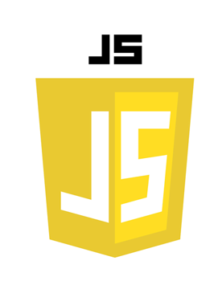

泰山職訓局
從零開始的網頁設計課程
轉職網頁開發人員 掌握就業必備職能
由深入淺學習技能 強化職場的競爭力

Html
超文本標記語言（英語：HyperText Markup Language，簡稱：HTML）是一種用於建立網頁的標準標記語言。HTML是一種基礎技術，常與CSS、JavaScript一起被眾多網站用於設計網頁、網頁應用程式以及行動應用程式的使用者介面。網頁瀏覽器可以讀取HTML檔案，並將其彩現成視覺化網頁。HTML描述了一個網站的結構語意隨著線索的呈現，使之成為一種標記語言而非程式語言。

CSS3
階層式樣式表（英語：Cascading Style Sheets，縮寫：CSS；又稱串樣式列表、級聯樣式表、串接樣式表、階層式樣式表）是一種用來為結構化文件（如HTML文件或XML應用）添加樣式（字型、間距和顏色等）的電腦語言，由W3C定義和維護。 CSS3現在已被大部分現代瀏覽器支援，而下一版的CSS4仍在開發中。

Bootstrap
Bootstrap是一組用於網站和網路應用程式開發的開源前端框架，包括HTML、CSS及JavaScript的框架，提供字體排印、表單、按鈕、導航及其他各種元件及Javascript擴充套件，旨在使動態網頁和Web應用的開發更加容易。

Sass
Sass是一個最初由Hampton Catlin設計並由Natalie Weizenbaum開發的層疊樣式表語言。在開發最初版本之後，Weizenbaum和Chris Eppstein繼續通過SassScript來繼續擴充Sass的功能。SassScript是一個在Sass檔案中使用的小型手稿語言。

Vue.js
Vue.js是一個用於建立使用者介面的開源MVVM前端JavaScript框架，也是一個建立單頁應用的Web應用框架。Vue.js由尤雨溪建立，由他和其他活躍的核心團隊成員維護。 2016年一項針對JavaScript框架的調查表明，Vue有著89%的開發者滿意度。

jQuery
jQuery是一套跨瀏覽器的JavaScript函式庫，用於簡化HTML與JavaScript之間的操作。約翰·雷西格在2006年1月的BarCamp NYC上釋出了第一個版本。目前由Dave Methvin領導的團隊進行開發。
